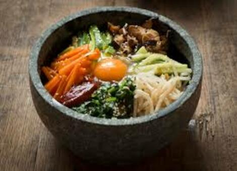
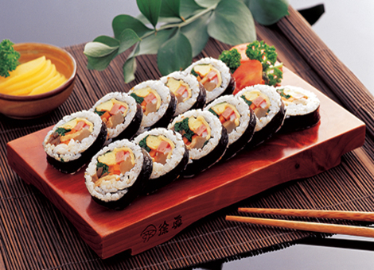
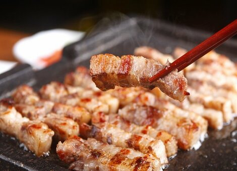
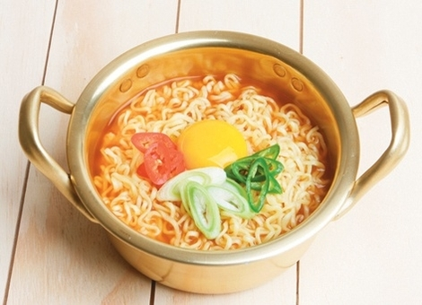
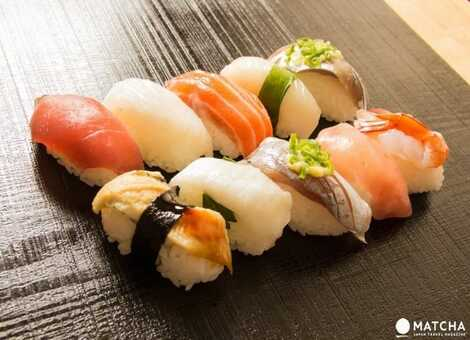
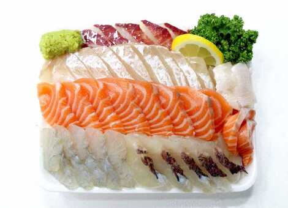
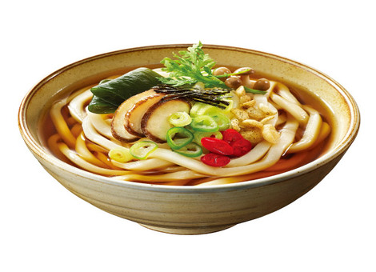
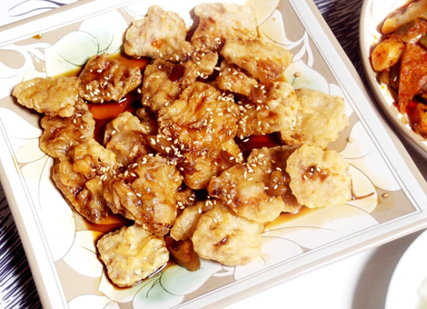
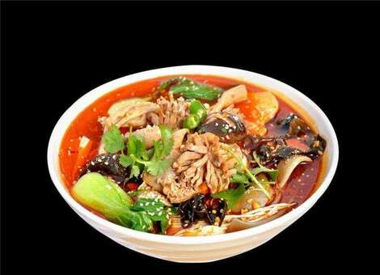
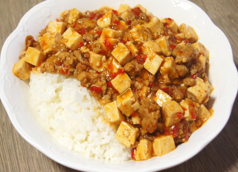

Bibimbap
CA$ 10
Bibimbap, a traditional Korean food, is a dish made by mixing rice with various vegetables
such as bean sprouts, cucumbers, bracken, carrots, mushrooms, onions, radishes,
bellflower roots, and spinach, and then mixing red pepper paste, beef, and sesame oil.
In our restaurant, we sell bibimbap for CA $10 per bowl.

Gimbap
CA$ 3
Gimbap is a dish made of salted rice, pickled radish,
ham, carrots, and cucumbers on the seaweed. After rolling them,
cut them into bite-sized pieces with a knife. In our restaurant, we sell a line of gimbap for CA$ 3.

Samgyeopsal
CA$ 13
Samgyeopsal, or pork belly, is a part of pork attached to the ribs of a pig.
In general, western cultures, such as Canada, make bacon with it.
But it's really delicious if you grill it whole without cutting it into small pieces.
Our restaurant sells one serving of pork belly for CA$ 13.

Ramyun
CA$ 3
Ramyun is one of the most popular instant foods in Korea.
It is a spicy-flavored noodle made with flour and ramyun soup.
In our restaurant, we sell ramyun for CA$ 3.

Sushi
CA$ 11
Sushi is a typical Japanese dish with various kinds of sashimi on top of rice seasoned with salt and vinegar.
The types of sashimi include salmon, flatfish and shrimp.
In our restaurant, we sell for CA$ 11 per 10 pieces of sushi.

Sashimi
CA$ 12
Sashimi is a dish that eats raw fish without heat.
It is one of the most popular Japanese foods in the world.
Our restaurant sells 12 pieces of sashimi which includes salmon, trout, and flatfish for CA$ 12.

Udon
CA$ 5
Udon is Japan's traditional and most popular noodle dish. The soup is flavored with katsuobushi,
fish cake, tenkasu, seafood, mushrooms, vegetables and bamboo shoots.
In our restaurant, we sell a bowl of udon for CA$ 5.

Guobaorou
CA$ 20
Guobaorou is a dish that is fried with large, wide, thin slices of meat and potato starch dough.
Fries are crispy on the outside but chewy on the inside, and the sauce has a low viscosity and a strong sour taste.
In our restaurant, we sells guobaorou for $20 for 2 people.

Malatang
CA$ 13
Malatang is a Chinese dish made with vinegar, octagonal, cloves, and horseradish,
and so on, with red pepper powder and tofu and broth, then with vegetables, meat, noodles,
tofu, and meatballs. Beware: It's very spicy. Our restaurant sells malatang for 13 dollars per bowl.

Mapo Tofu
CA$ 12
Mapo Tofu is a stir-fried dish with pork, tofu, garlic, ginger, green onion, onion, broth, vinegar, starch and sesame oil.
If you eat it with rice, it's really delicious. In our restaurant, we sell Mapo Tofu Combo, which includes rice and soybean paste soup, for CA$ 12.